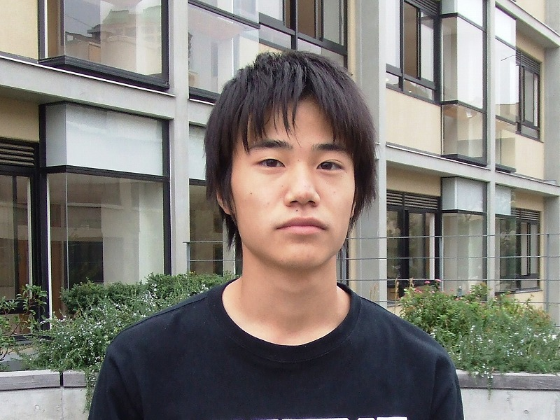

第57代生徒会長による2008年の灘校生徒会公式ウェブサイトのリニューアルに際しての挨拶です。

皆さんこんにちは。第57代生徒会長の松田隼です。今回このように生徒会ウェブサイトのリニューアルに至ったことを、たいへん嬉しく思います。
これまでは、皆さんが生徒会のウェブサイトを見ることはほとんどなかったと思いますが、今後さらに魅力的なコンテンツも増やしていき、見ていて楽しく、皆さんが頻繁に足を運んでくれるようなサイトにしていこうと思っています。
今回のリニューアルに際しては、「皆さんに生徒会の活動についてもっとよく知ってもらおう」ということを常に念頭に置いてきました。これまでにも生徒会広報や生徒会誌など、様々な形で活動報告は行ってきましたが、それでも生徒会活動についてよく知らない人はまだまだ多いと思います。 灘校に在籍している生徒は全員、灘校生徒会の会員です。近年、文化委員や体育委員の人数は増加傾向にありますが、行事を運営する側に回り、一つの目標のために全員でものごとを創り上げていくというのは、とても楽しい経験です。皆さんも、合唱や演劇をクラスでまとまって成功させた時、そんな経験をしたことがあると思います。無事に成功させることができた後の達成感は、言葉では表せないものです。
勉強だけでなく、部活や学校行事にも全力を注ぐ、それが灘校の良いところだと僕は思っています。生徒会とは言わば、「より良い灘校を創るために活動する人たちの集団」です。その目標の達成のために、仲間とともに真剣に話し合い、考え、創り上げていくことは、素晴らしい経験になることと思います。皆さんも是非、灘校生徒会で「より良い灘校」のために活動してみませんか？